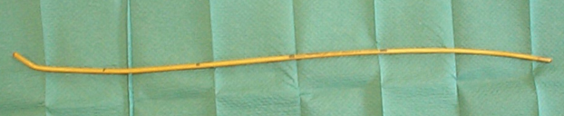

Bienvenue Sur Medical Education
Mandrin long béquillé
Spécialité : orl /
Points importants
- Le long mandrin béquillé ou bougie doit faire partie de toute mallette ou chariot d'intubation difficile
- Son taux de succès est très élevé
-
Les complications liées à son utilisation sont exceptionnelles
Indications
- Toute laryngoscopie difficile Score de Cormack
#
- fichier_531 Classification de Cormack et Lehane sous laryngoscopie directe
- En cas d’échecs d’intubation sous laryngoscopie directe
Contre-indications
-
Aucune contre-indication
Présentation du matériel
- Mandrin à usage unique semi-rigide ayant une longueur de 60 à 72 cm avec des repères tout les 10cm et un diamètre de 5 mm (french 15), recourbé en son extrémité distale en forme de J
 fichier_532 Photo Mandrin à usage unique semi-rigide
-
Convient aux sondes trachéales de diamètre = 6 mm (modèle adulte)
Description de la technique
fichier_533 fichier_533 - - - Mandrin long béquillé
- La technique d'intubation consiste en l'introduction de la bougie sous l'épiglotte lors de la réalisation d'une laryngoscopie directe.
- On avancera la bougie en continuant à visualiser celle-ci durant toute la procédure
-
La position endotrachéale de la bougie est affirmée par :
- la sensation de ressaut quand l'extrémité distale recourbée vers le haut frotte sur les cartilages trachéaux
- une résistance à la progression quand la bougie atteint la carène ou les premières divisions bronchiques (après 30 à 40 cm de progression)
- La sonde d'intubation est alors glissée sur la bougie jusque dans la trachée. Le passage du larynx est facilité par la rotation de la sonde en sens anti-horaire pour positionner le biseau vers le bas
- Il faut maintenir le laryngoscope en place et la laryngoscopie durant cette manœuvre
- Une fois la sonde d'intubation placée dans la trachée, il faut retirer la bougie puis le laryngoscope
-
Vérifier la bonne position de la sonde d'intubation (capnographie et/ou test à la seringue et ausculation)
Pièges éventuels
-
Les principales causes d'échec évitables sont :
- le non maintien de la laryngoscopie durant la progression de la sonde
-
l'utilisation d'un mandrin trop mou, notamment si il a été stocké dans un endroit trop chaud
Complications
-
Exceptionnelles
Surveillance
-
Monitoring du patient : scope, oxymétrie de pouls, PA non invasive, capnométrie
Bibliographie
- Jabre P, Combes X, Leroux B, et al. Use of gum elastic bougie for prehospital difficult intubation. Am J Emerg Med 2005;23(4):552-5
- Gataure PS, Vaughan RS, Latto IP. Simulated difficult intubation. Comparison of the gum elastic bougie and the stylet. Anaesthesia 1996;51(10):935-8
- Dogra S, Falconerr R, Latto IP. Increased use of gum-elastic bougie in clinical practice. Anaesthesia 1990;45(11):997-8
-
Kidd JF, Dyson A, Latto IP. Successful difficult intubation. Use of the gum elastic bougie. Anaesthesia 1988;43(6):437-8
Auteur(s) : Xavier COMBES, Patrick PLAISANCE